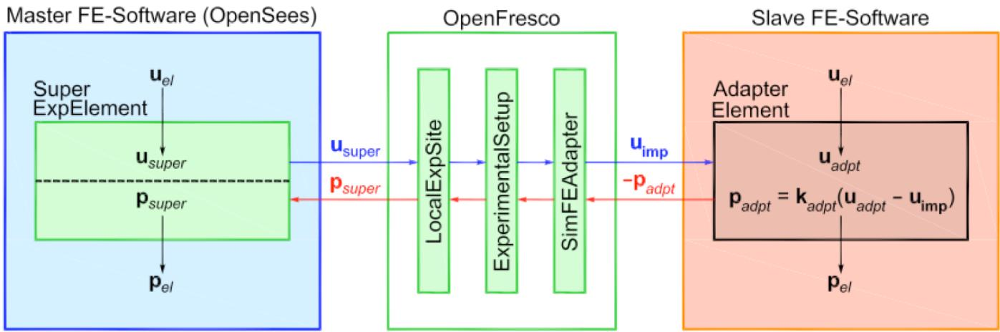

2.7. SimFEAdapter 实验控制
2.7.1. 命令
此命令用于构建仿真有限元适配器（Simulation Finite-Element-Adapter）实验控制对象。该控制器用于通过单一持久 TCP/IP 连接与另一个有限元软件的适配单元进行通信。它允许用户将两个不同的有限元软件包耦合在一起，以执行单一分析。
expControl SimFEAdapter tag ipAddr ipPort -trialCP cpTags -outCP cpTags <-ssl> <-udp> <-useRelativeTrial> <-ctrlFilters (5 $filterTag)> <-daqFilters (5 $filterTag)>
$tag |
唯一控制标签 |
ipAddr |
从属进程的 IP 地址 |
$ipPort |
从属进程的 IP 端口 |
$cpTags |
先前定义的控制点标签 |
$filterTag |
先前定义的滤波器标签标识；滤波器标签标识大小为 5（条目：[位移, 速度, 加速度, 力, 时间][disp, vel, accel, force, time]） |
2.7.2. 示例
expControl SimFEAdapter 1 "127.0.0.1" 44000 -trialCP 1 -outCP 2
上述示例使用 IP 地址为 127.0.0.1、端口号为 44000 的 SimFEAdapter 实验控制器。
{kind=link}

图 2.5 SimFEAdapter 实验控制
2.7.3. 记录Recorder
在创建 ExpControlRecorder 对象时，对 SimFEAdapter 实验控制的有效查询包括（代码setResponse部分）：
控制（命令）位移：ctrlDisp, ctrlDisplacement, ctrlDisplacements
控制（命令）速度：ctrlVel, ctrlVelocity, ctrlVelocities
数据采集（反馈）位移：daqDisp, daqDisplacement, daqDisplacements
数据采集（反馈）速度：daqVel, daqVelocity, daqVelocities
数据采集（反馈）力：daqForce, daqForces